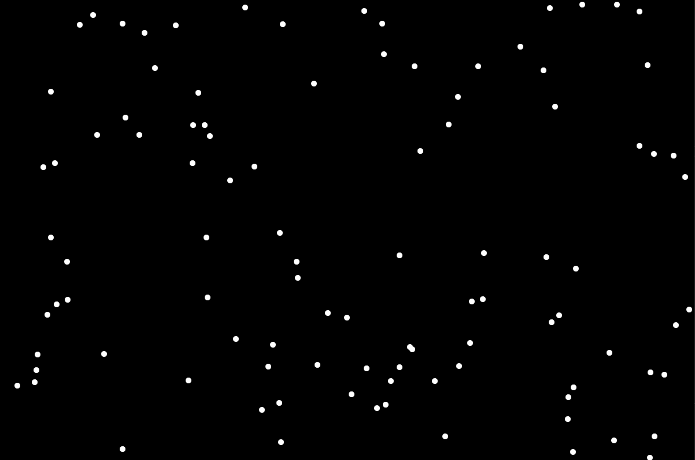

Ah, the majestic boid. Soaring high above the canopy-ish thing, she searches for a place to build something similar to a nest in which to lay her egglike ovals. The boid is a 'birdlike object', like a plane or Superman. The idea is that birds' flocking behavior, whilst appearing complex, can be simulated using only 3 simple rules. So let's hope that your Sims have their car-like objects parked in the garage, because we're about to code up a whole big mess of these things.
If you were to explain the features of a bird to a child, how would you do it? Of course, you'd say, "Well, little Timmy, a bird has a color, a a size, a position, and 3 discrete 2 float component vectors with a clamp that prevents them from moving arbitrarily fast." Timmy's in 8th grade, he should expect some sass when he asks you to explain birds.
Okay, so if you're like me and didn't pay attention in high school math, it's really not as complicated as it sounds. In class they probably defined a vector as a 'direction and magnitude', basically where the boid is steering and how fast it is going. In my roguelike game that I'm making, the actors have simple movement. They only have a 'position', which are the coordinates 'x' and 'y', and that's where they are drawn on the screen. If the character's goal is to move right, add to 'x', to move up, add to 'y'. Here, we can think about vectors the same way. But the boid has more than one goal, thus more than one vector. So we take the 'x' from each vector and add them together, and the 'y' from each vector and add them together, and the sum of each are the coordinates of the boid's position on the screen.
local boids = {}
function boids.new()
local flock = {}
function flock.add_members(num)
for member = 1, num do
flock[member] = {
color = { 1, 1, 1, 1 };
scale = 1;
position = { x = math.random(1, screenwidth);
y = math.random(1, screenheight) };
v1 = { x = 0.0, y = 0.0 };
v2 = { x = 0.0, y = 0.0 };
v3 = { x = 0.0, y = 0.0 };
}
end
return flock
end
return flock
end
return boids
Here we have our base class, 'boids', with a function to 'add_members' to the flock. Each boid gets a color and a size (scale), and we give it random coordinates so that they first appear at random positions on the screen. We'll start their 3 vectors at 0. We could assign another number here if we wanted them to start in mid-flight, but it will be better for now to keep them still because it will be easier to see how our other functions are making them behave.
Since we already know we're going to have 3 functions acting on 3 components, now is as good of a time as any to write our update function. Remember that we just need to add each boid's vectors together to get their position. For those who speak pseudocode, the steps will be 'get the flock, then get a boid from the flock, get all the boid's vectors and add them together, and that result is the boid's position, and do that for every member of the flock'.
function flock:update()
for member in ipairs(flock) do
local x = flock[member].v1.x + flock[member].v2.x + flock[member].v3.x
local y = flock[member].v1.y + flock[member].v2.y + flock[member].v3.y
flock[member].position.x = flock[member].position.x + x
flock[member].position.y = flock[member].position.y + y
end
return flock
end
Now that we've given the breath of life to these noble creatures, let's behold them in all their glory:
Ugh, I hate them! They're horrible, they just sit there. Well, while we've got them soaking in the brine and the oven is preheating to 425, let's see if we can't make them a little more animated with a little boid brain surgery. Let's start adding rules, so our update function can do more than just add zeroes together to no effect.
As David Attenborough has taught us, boids are social objects. To maintain the flock, boids will consistently steer to its center. This should mean that if a boid is far from the flock, this behavior will cause it to return, and if it's near the center, it should gracefully lilt about with other centrally located boids. Here's how I have it written:
function flock:rule1()
local averageX = 0
local averageY = 0
for member in ipairs(flock) do
averageX = averageX + flock[member].position.x
averageY = averageY + flock[member].position.y
end
averageX = averageX / #flock
averageY = averageY / #flock
for member in ipairs(flock) do
if flock[member].position.x > averageX then
flock[member].v1.x = flock[member].v1.x - dt
end
if flock[member].position.x < averageX then
flock[member].v1.x = flock[member].v1.x + dt
end
if flock[member].position.y > averageY then
flock[member].v1.y = flock[member].v1.y - dt
end
if flock[member].position.y < averageY then
flock[member].v1.y = flock[member].v1.y + dt
end
end
return flock
end
Here, we are iterating over the flock, and adding up all of the member's positions, and then dividing by the size of the flock to get the average positions for each coordinate. Then iterating over it again, adding or subtracting dt (delta time) to cause the boid to move and steer towards the average.
Output:
I'm a computer programmer, I've never been outside, so I really can't say whether this looks like a flock of birds. But I have a feeling that we're already going off the rails a bit. First, let's point out that there is some success here, the boids do appear to be moving towards the center of the flock, and the center shifts with the movement of the boids, giving movement to the entire flock (all the way off the screen). The real problem is the way that I'm adjusting the vector. By adding or subtracting delta time, that means that a boid on one side of the flock continues to build up speed until it reaches the opposite side. Nearby boids do gently float through the center, but faraway boids don't slow down, they blast towards the flock and get flung through the center and pop out of the other side like popcorn.
We could fix this by either making v1 a constant, or by applying a clamp. I've been learning a lot about programming lately though, so I know that this isn't the preferred method. Instead, I'll ignore it and hope it gets fixed in the next update.
This one should be an easy one. Famous last words. We already know how to iterate through the flock and get an average, so we just need to do that with all of our vectors, and then set all of the boids' v2 to that.
function flock:rule2()
local averageX = 0
local averageY = 0
for member in ipairs(flock) do
averageX = averageX + flock[member].v1.x;
+ flock[member].v2.x + flock[member].v3.x
averageY = averageY + flock[member].v1.y;
+ flock[member].v2.y + flock[member].v3.y
end
averageX, averageY = averageX / #flock, averageY / #flock
for member in ipairs(flock) do
flock[member].v2.x = averageX / 3
flock[member].v2.y = averageY / 3
end
end
Output:
So, it's a little hard to tell in the video. Note the FPS counter I have added, I was troubleshooting this, it's just chugging a bit while I'm recording. I get ~450 FPS without OBS running in the background, and the boids move a lot more smoothly.
So, I guess just take my word for now, this rule seems to be working as it should, the boids are speeding up and slowing down together, it's still a little popcorn-ey, but it's not too bad.
We'll say that our boids are more Responsible Ravens than Lush Larks, so they'll avoid FUI (flying under the influence), and they'll be good at avoiding mid-flight collisions. So we need to do 2 new things here. One, they need to have a way to detect when another boid is too close, and two, give them some sort of evasive maneuver.
local circle = function (cx, cy, radius, x, y)
local dx = cx - x
local dy = cy - y
return dx * dx + dy * dy <= radius * radius
end
function flock:rule3()
local radius = 15
for i = 1, #flock do
local member = flock[i]
for j = 1, #flock do
local neighbor = flock[j]
local x = neighbor.position.x
local y = neighbor.position.y
if i ~= j then j = j + 1
if circle(member.position.x, member.position.y, radius, neighbor.position.x, neighbor.position.y) then
member.v1.x = neighbor.v2.y
member.v1.y = neighbor.v2.x
end
end
end
end
end
My idea here is to use a double for loop. The first loop gets the 'acting boid', i, and the second gets the neighbors, j, the ones we're checking against. We check that i does not equal j, because otherwise, the boid continually attempts to avoid a collision with itself. Then we have our local function 'circle', this gives our boid a circle around his position, with a radius of 15, and it checks his neighbor's position. If his neighbor's position falls within the circle, it returns true, and then our boid can evade.
I'm not really sure how to make the boids evade each other. I want them to each kind of move at an angle away from each other so maybe just swapping their 'x' and 'y' from a vector would work, but I'll try actually swapping them between vectors as well. I will try it without even using vector 3. This should make the boids momentarily 'forget' their movement goals in order to avoid the collision. Nothing could possibly go wrong:
What in the Sam Hill?!
Before we start talking crazy using words like 'bug', let's recognize that the goal here was to keep the boids from colliding with each other. Technicially, my code works extremely well - they stop dead in their tracks to avoid a collision. I think what's making my code "too good" is that, by swapping vectors, it kind of causes a cascading effect. Since there are so many boids, they're all near another boid, so all of their v1s are nullified right away, and all that's left is v2, which is the average speed of the flock. And the average speed is pretty low, since they're all locked in some strange, paralytic dance.
Still, it's kind of neat in a way. Let's run the simulaton a few more times.
To stop them from freezing, let's bring our vector 3 into play. Instead of swapping our boid's v1 with our neighbor's v2, let's take our neighbor's v1, multiply it by -1, and that will be our boid's v3. This should make them move in the opposite direction of nearby boids.
Now they either just float together, or bounce off of each other like pingpong balls. I tried a bunch of different things here, all with varying degrees of success. Nothing worked perfectly. Have a look:
I'm using the word 'steal' for comedic effect, everything that I've looked at using actually has a permissive license. Being self-taught, I'm both the student and the teacher, and the teacher part has decided that using someone else's code here is fine, as the student is still going to get some practice transcribing it from the source language into Lua.
This ended up being a moot point anyway. I just can't find anything I like enough to rip off. The boids are either too simple (like spawning at one edge of the screen and flying with a fixed speed to the other) or too complex (like a 15k line C++ scientific simulation of a murmur written by real life bird scientists at universities). There seems to be no 'Goldilocks boid code'- hey, I think that's the name of a band. Which brings us to boid rule 5 of 3.
And just like that, our confetti simulator works perfectly!
Hope you've enjoyed reading this article as much as I enjoyed writing it, see you next time!